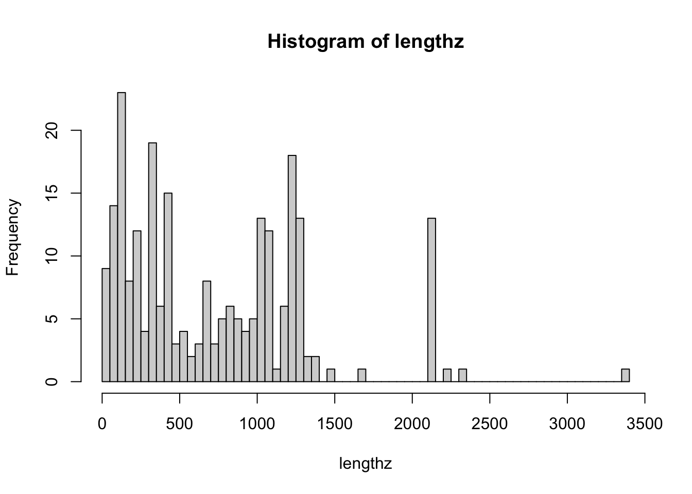
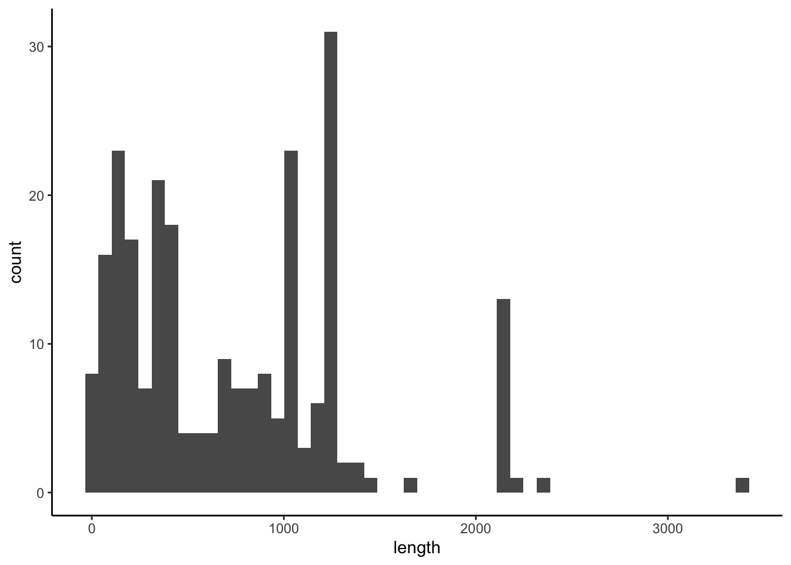

4.1 Analyzing viral protein sequences
Let’s work through an analysis of the size of some structural viral proteins. We’ve done some of the work for you already, and would recommend that you always document where the data came from and how it was retrieved/processed:
The NCBI Identital Protein Groups database was queried for “structural” with “Division” restricted to “Viruses” and “Source database” restricted to “UniProtKB/Swiss-Prot”. 243 results were retrieved as FASTA files and converted using bash commands into separate tab-delimited files. 3
These files are in the data/viral_structural_proteins folder,
are tab-delimited three fields, and look like this:
Q8V433.1 Membrane protein Bovine respiratory coronavirus (strain 98TXSF-110-LUN) MSSVTTPAPVYTWTA...How do you inspect these files? What bash tools do you use?
4.1.1 Reading in tab-delimited file
Let’s read one of them into R.
The records are “delimited” by tabs, so each field is tab-separated.
We’ll need to use the read.delim function and specify a tab separator.
4.1.1.1 Review of looking up documentation
You can look up the documentation for any named function or package by using
the ?function syntax.
Sometimes, you need to use extra backticks to make it work, like ?`+`
If you don’t know what you’re looking for, you can search with ??.
Extra backticks don’t hurt, and are necessary when you have spaces in the
query.
Once the documentation is open, you can search for text.
If you are using the R console, you can use / to open a search bar and
enter-key to search for it.
4.1.1.2 Back to the file-reading…
What does ?read.delim say it does?
How do you set the delimiter/separator as a tab?
4
Is the function expecting there to be a file “header”?
( This would where the first line of the file has the name of each column )
Do we want to set this to TRUE or FALSE ?)
viral_protein_data <- read.delim("data/viral_structural_proteins/viral_proteins_100.tsv",
sep="\t",header=F)
viral_protein_data## V1
## 1 Q8V433.1 Membrane protein
## V2
## 1 Bovine respiratory coronavirus (strain 98TXSF-110-LUN)
## V3
## 1 MSSVTTPAPVYTWTADEAIKFLKEWNFSLGIILLFITVILQFGYTSRSMFVYVIKMIILWLMWPLTIILTIFNCVYALNNVYLGFSIVFTIVAIIMWIVYFVNSIRLFIRTGSWWSFNPETNNLMCIDMKGRMYVRPIIEDYHTLTVTIIRGHLYMQGIKLGTGYSLSDLPAYVTVAKVSHLLTYKRGFLDKIGDTSGFAVYVKSKVGNYRLPSTQKGSGLDTALLRNNI- What is
viral_protein_data? - How do we find the column names?
- What are two ways to access the protein sequence?
- How do we calculate the number of characters in this protein sequence?
( Try searching with “??
number of characters” )
What type is the V3 column? What should it be?
How do we tell R to treat these strings as they are, and not convert to factors?
4.1.2 Loops - doing a similar task multiple times
You will want to repeat this analysis for multiple file. This automation is great, really useful for scaling your analyses.
Let’s do this for all the proteins. The simplest way of doing this is to copy and paste it, and change the filename.
viral_protein_data <- read.delim("data/viral_structural_proteins/viral_proteins_002.tsv",
sep="\t",header=F, as.is=T)
nchar(viral_protein_data$V3[[1]])## [1] 177viral_protein_data <- read.delim("data/viral_structural_proteins/viral_proteins_003.tsv",
sep="\t",header=F, as.is=T)
nchar(viral_protein_data[1,"V3"])## [1] 137Go ahead and do this for all 242 proteins
… just kidding.
This is a lot of work, and each time we do this we can introduce errors. If we ever have more files, we have to copy and paste more. If we ever want to change an argument for all of them, we have to do each one.
Instead, we can work with a list of all the files available:
## [1] "viral_proteins_000.tsv" "viral_proteins_001.tsv" "viral_proteins_002.tsv"
## [4] "viral_proteins_003.tsv" "viral_proteins_004.tsv"Note that I put a [1:5] to limit it to the first 5.
You could also use head(). It’s a good idea to work
with a small subset of files while you are iterating
through development, then scale it up to the entirety.
Now how do you calculate the number of characters for each protein?
How do we do this for every file listed … ?
4.1.2.1 What are loops?
Loops are for running a “code block” as many times as the “condition” determines.
A “code block” is either one line of code, or multiple lines of code surrounded by curly brackets - {}
{ code <- "in a block" with <- "multiple lines" }The code just runs. Yep. It’s that simple.
A “condition” is an expression of code that can either evaluate to either
TRUEorFALSE, or set a variable for each time running the code block. This is often just before the code block, in()parentheses.
The most common form of these kind of “control statements” is a for loop.
Other “control statements” or “flow control statements” are
while, repeat, and if.
Let’s look up what they do, with ?`for`
Note the back ticks! These are a trick in R to make anything
be interpreted as literally what you type, and not
any special characters. Like ?`+`, or ?`?`
Here’s an example loop:
## [1] 1
## [1] 2
## [1] 3
## [1] 4The pieces:
(i in 1:4)is what is being looped over -1:4is a vector of 1 through 4 that is created, and it is put one at a time intoi(a new variable). You need the parentheses.{and}denote the opening and closing brackets, specify the “code block” that is run each time.inside this “code block” is
print(i)- it prints the variablei, which is set to a value of 1, 2, 3, or 4 for each loop
How do we loop through and print each file name?
What are the (1) code block and (2) loop condition ?
## [1] "viral_proteins_000.tsv"
## [1] "viral_proteins_001.tsv"
## [1] "viral_proteins_002.tsv"
## [1] "viral_proteins_003.tsv"
## [1] "viral_proteins_004.tsv"How do we modify this to calculate the protein length?
I add a line where we use nchar, but i is the filename instead of me
typing it in there.
for (i in list.files(path="data/viral_structural_proteins")[1:5] ) {
print(i)
print(nchar(read.delim(i)$V3[[1]]))
}## [1] "viral_proteins_000.tsv"## Warning in file(file, "rt"): cannot open file 'viral_proteins_000.tsv': No such
## file or directory## Error in file(file, "rt"): cannot open the connectionError! It is looking for a file viral_proteins_000.tsv, but it is looking
in this directory. It is actually in data/viral_structural_proteins.
Look up the list.files documentation, and find how to get it to return
the full name of the file.
Next, this should work…
for (i in list.files(path="data/viral_structural_proteins",
full.names=T)[1:5] ) {
print(nchar(read.delim(i,sep="\t",header=F,as.is=T)$V3[[1]]))
}## [1] 1248
## [1] 1254
## [1] 177
## [1] 137
## [1] 117And yep, we have lengths of protein sequences.
…
What now?
4.1.2.2 Storing values from a loop
How do we store these values for later analysis?
In other languages, “append”. But R is not built that way. It’ll work, but it’s very inefficient. The “R-way” to store values from a loop is to define a vector of the right length, then put each element in it.
Here’s some example vectors that we can create.
## [1] "" "" "" "" "" "" "" "" "" ""## [1] 0 0 0 0 0## [1] FALSE FALSEOkay, but how do we access each position to save the value? We need to turn out list of files into indicies. We’ll save it first so we can count how many there are.
seq_along is handy function to create a number sequence along a vector,
otherwise use something like seq(1,length(x)).
first_five <- list.files(path="data/viral_structural_proteins")[1:5]
for (i in seq_along(first_five) ) {
print(i)
print(first_five[i])
}## [1] 1
## [1] "viral_proteins_000.tsv"
## [1] 2
## [1] "viral_proteins_001.tsv"
## [1] 3
## [1] "viral_proteins_002.tsv"
## [1] 4
## [1] "viral_proteins_003.tsv"
## [1] 5
## [1] "viral_proteins_004.tsv"Putting these together, we can create and save a vector of file names:
first_five <- list.files(path="data/viral_structural_proteins")[1:5]
filenamez <- vector("character",length(first_five))
for (i in seq_along(first_five) ) {
filenamez[i] <- first_five[i]
}
filenamez## [1] "viral_proteins_000.tsv" "viral_proteins_001.tsv" "viral_proteins_002.tsv"
## [4] "viral_proteins_003.tsv" "viral_proteins_004.tsv"And finally calculate the length of each protein:
first_five <- list.files(path="data/viral_structural_proteins",
full.names=T, pattern=".*tsv")[1:5]
lengthz <- vector("character",length(first_five))
for (i in seq_along(first_five) ) {
lengthz[i] <- nchar( read.delim(first_five[i],
header=F,as.is=T,sep="\t")$V3[[1]]
)
}
lengthz## [1] "1248" "1254" "177" "137" "117"Now we can take off the [1:5] limiter, and do the whole set:
first_five <- list.files(path="data/viral_structural_proteins",
full.names=T, pattern=".*tsv")
lengthz <- vector("character",length(first_five))
for (i in seq_along(first_five) ) {
lengthz[i] <- nchar( read.delim(first_five[i],
header=F,as.is=T,sep="\t")$V3[[1]]
)
}How do we go about visualizing/analyzing this?
## Error in hist.default(lengthz): 'x' must be numericer what…? Debug! What is lengthz?
## chr [1:243] "1248" "1254" "177" "137" "117" "117" "858" "1242" "1255" ...Character? Let’s try numeric instead…
first_five <- list.files(path="data/viral_structural_proteins",
full.names=T, pattern=".*tsv")
lengthz <- vector("numeric",length(first_five))
for (i in seq_along(first_five) ) {
lengthz[i] <- nchar( read.delim(first_five[i],
header=F,as.is=T,sep="\t")$V3[[1]]
)
}Base R histogram

More fancy ggplot
library(ggplot2)
ggplot( data.frame(length=lengthz) )+theme_classic()+
aes(x=length)+geom_histogram(bins=50)
## Min. 1st Qu. Median Mean 3rd Qu. Max.
## 1.0 231.5 646.0 729.2 1089.0 3390.0And that’s about how long the viral structural proteins in this database tend to be.
- How do we extend this analysis to add more files?
- How do we calculate new properties about the sequences?
- How do we store that?
4.1.3 Using functions to write modular code
How might you carry out the workflow from the previous work to calculate protein sequence lengths?
One way is to flatten out all the tasks, and to script each individual task each time. This requires the author, user, and reader to understand a lot of complexity.
Another way to approach this is to cluster them into a hierarchy of modules.
In this organization, the analyst can operate at levels of steps, modules, and specific instructions, depending on what is needed.
Organizing your workflows into composable modules lets you extend these to un-ancipiated complexity. You could imaging using these steps or modules:
in new ways by composing the elements together, to analyze a different source of proteins, with a new analysis, with similar plots:
4.1.4 Tips for modular workflows
Try to not “hardcode” things - if it’s a number, consider if it can be a parameter that is “passed in” as an argument.
Group repeated code functions - some folks say you should never repeat code (but do what works for you!).
Try to read inputs and outputs as general, flexible formats - strings of filenames, vectors of values
Write a comment at the top of the function that says what it’s doing and what to expect, generally comment things.
Consider, the list.files() and hist() functions are already built this way!
How about a ggplot2 style boxplot?
4.1.4.1 Let’s write a plotting module/function
Write a function that makes a ggplot2 boxplot for some numbers.
What should the function take, what should it do?
What is “some numbers”?
What should it return?
wrap it in `print(ggplot code)` or return the ggplot object as
a variable4.1.5 More complex workflow
Let’s write a simulation of viral evolution.
(could be a bad idea, considering….)
More examples/exercise
show a simulation of something…. genetic drift of a virus replicating?
lineage G1312F
exercise - wrap the entire analysis as a function
talk about ease of calling
ease of tweaking this
exercise - break into subfunctions, generate and plot
ease of changing models
4.1.6 Apply is a popular tool
Apply is another common way of doing something over and over. It is a very compact way to take pieces of a list, vector, dataframe, or matrix and put them into a function. There are:
apply- for 2D objectslapply- for lists and vectorssapply- islapplybut with simplified returnsmapply- is for combinations of multiple variablesreplicate- calls a function multiple times
Some people strongly prefer coding this way. Here is an example:
list_of_protein_files <- lapply(
list.files("data/viral_structural_proteins/",full.names=T),
read.delim,
sep="\t",header=F)These “apply” some “FUN” to some input variables, by taking each element or
slices of elements from input variables and putting them in as arguments
to the function being applied. They return odd things, often lists (unlist()).
One crucial aspect missing is the actual bash commands used. I did not save them as a script, and I should go back, save them in a script, and re-run that to make sure I get the same result!↩
Often this is typed into computers and scripts as “”, as the tab key will often not put a TAB character into where you’re typing.↩
Licensed Creative Commons Attribution-NonCommercial-ShareAlike 4.0